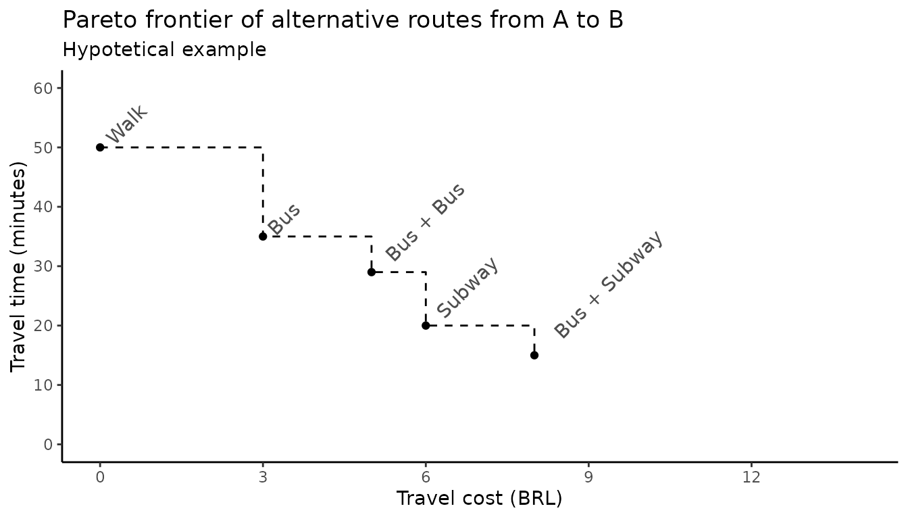
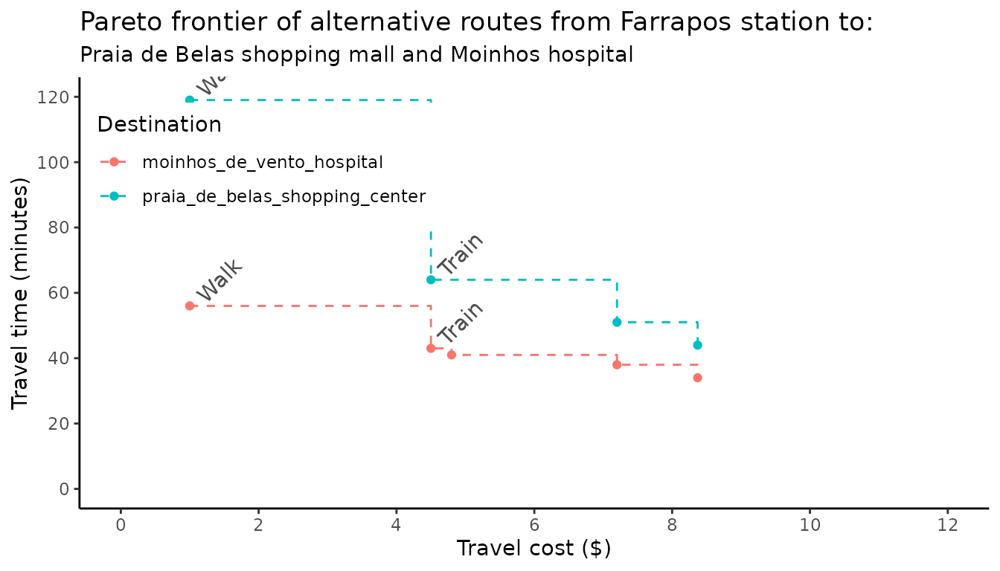

Trade-offs between travel time and monetary cost
2025-05-11
Source:vignettes/pareto_frontier.Rmd
pareto_frontier.RmdAbstract
This vignette shows how to use thepareto_frontier()
function to examine the trade-offs between travel time and
monetary cost in travel time matrices in r5r.
1. Introduction
In most cases, transport routing models find either the fastest or the lowest-cost routes that connect places in a given transport network. Sometimes, though, we might want a more sophisticated analysis that considers both the time and monetary costs that public transport passengers have to face. The problem here is that simultaneously accounting for both time and monetary costs is a major challenge for routing models because of the trade-offs between the objectives of minimizing trip duration and cost (Conway and Stewart 2019).
To address this problem, r5r has a function called
pareto_frontier(), which calculates the most efficient
route possibilities between origin destination pairs considering
multiple combinations of travel time and monetary costs. This vignette
uses a reproducible example to demonstrate how to use
pareto_frontier() and interpret its results.
2. What the pareto_frontier means.
Imagine a hypothetical journey from A to B. There are multiple route alternatives between this origin and destination with varying combinations of travel time and cost (figure below).
- Walking from A to B would be the cheapest option but it would take 50 minutes.
- The fastest option would be to take a bus to a subway station and transfer to the subway. This option would only take 15 minutes, but it would cost $8.
- There are some intermediary alternatives, such as taking:
- a single bus, $3 for 35 min.
- two buses with one transfer, $5 for 29 min.
- taking the subway after walking to the station , $6 for 20 min.
This figure illustrates the Pareto frontier of alternative routes from A to B. In other words, it shows the most optimal set of route alternatives between A and B. There are certainly other route options, but there is no other option that is both faster and cheaper at the same time.

This kind of abstraction allows us to have a better grasp of the trade-offs between travel time and monetary cost passengers face when using public transport. It also allows us to calculate cumulative-opportunity accessibility metrics with cutoffs for both time and cost (e.g. the number of jobs reachable from a given origin with limits of 40 minutes and $5) (ref paper by Matt and Anson).
Let’s see a couple concrete examples showing how r5r can
calculate the Pareto frontier for multiple origins.
3. Demonstration of pareto_frontier().
3.1 Build routable transport network with
setup_r5()
First, let’s build the network and create the routing inputs. In this
example we’ll be using the a sample data set for the city of Porto
Alegre (Brazil) included in r5r.
# increase Java memory
options(java.parameters = "-Xmx2G")
# load libraries
library(r5r)
library(data.table)
library(ggplot2)
library(dplyr)
# build a routable transport network with r5r
data_path <- system.file("extdata/poa", package = "r5r")
r5r_core <- setup_r5(data_path)
# routing inputs
mode <- c('walk', 'transit')
max_trip_duration <- 90 # minutes
# load origin/destination points of interest
points <- fread(file.path(data_path, "poa_points_of_interest.csv"))3.2 Set up the fare structure
Now we need to set what are the fare rules of our public transport
system. These rules will be used by R5 to calculate the
monetary cost of alternative routes. In the case of Porto Alegre, the
fare rules are as follows: * Each bus ticket costs R$ 4.80. * Riding a
second bus adds $ 2.40 to the total cost. Subsequent bus
rides cost the full ticket price of $ 4.80. * Each train ticket costs $
4.50. Once a passenger enters a train station, she can take an unlimited
amount of train trips as long as she doesn’t leave a station. * The
integrated fare between bus and train has a 10% discount, which totals $
8.37.
We can create list object with these fare rules with the
support of the setup_fare_structure() function as shown in
the code below. A detailed explanation of how to use the fare structure
of 5r5 can be found in (this
other vignette).
# create basic fare structure
fare_structure <- setup_fare_structure(r5r_core,
base_fare = 4.8,
by = "MODE")
# update the cost of bus and train fares
fare_structure$fares_per_type[, fare := fcase(type == "BUS", 4.80,
type == "RAIL", 4.50)]
# update the cost of tranfers
fare_structure$fares_per_transfer[, fare := fcase(first_leg == "BUS" & second_leg == "BUS", 7.2,
first_leg != second_leg, 8.37)]
# update transfer_time_allowance to 60 minutes
fare_structure$transfer_time_allowance <- 60
fare_structure$fares_per_type[type == "RAIL", unlimited_transfers := TRUE]
fare_structure$fares_per_type[type == "RAIL", allow_same_route_transfer := TRUE]For convenience, we can save these fare rules as a zip
file and load again for a future application.
# save fare rules to temp file
temp_fares <- tempfile(pattern = "fares_poa", fileext = ".zip")
r5r::write_fare_structure(fare_structure, file_path = temp_fares)
fare_structure <- r5r::read_fare_structure(file.path(data_path, "fares/fares_poa.zip"))3.3 Calculating a pareto_frontier().
In this example, we calculate the Pareto frontier from all origins to all destinations considering multiple cutoffs of monetary costs: - $1, which would only allow for walking trips - $4.5, which would only allow for rail trips - $4.8, which would allow for a single bus trip - $7.20, which would allow for bus + bus - $8.37, which would allow for walking walking + bus + rail
departure_datetime <- as.POSIXct("13-05-2019 14:00:00",
format = "%d-%m-%Y %H:%M:%S")
prtf <- pareto_frontier(r5r_core,
origins = points,
destinations = points,
mode = c("WALK", "TRANSIT"),
departure_datetime = departure_datetime,
fare_structure = fare_structure,
fare_cutoffs = c(1, 4.5, 4.8, 7.20, 8.37),
progress = TRUE
)
#> Loading required namespace: testthat
head(prtf)
#> from_id to_id percentile travel_time monetary_cost
#> <char> <char> <int> <int> <num>
#> 1: public_market public_market 50 0 1.0
#> 2: public_market bus_central_station 50 23 1.0
#> 3: public_market bus_central_station 50 19 4.5
#> 4: public_market bus_central_station 50 14 4.8
#> 5: public_market gasometer_museum 50 29 1.0
#> 6: public_market gasometer_museum 50 13 4.8For the sake of illustration, let’s check the optimum route alternatives from the Farrapos train station to (a) the Praia de Belas shopping mall and (b) the Moinhos hospital. An optimum route alternative means that one cannot make a faster trip without increasing costs, and one cannot make a cheaper trip without increasing travel time.
#> Warning in `[.data.table`(pf2, , `:=`(modes, fcase(monetary_cost == 1, "Walk",
#> : A shallow copy of this data.table was taken so that := can add or remove 1
#> columns by reference. At an earlier point, this data.table was copied by R (or
#> was created manually using structure() or similar). Avoid names<- and attr<-
#> which in R currently (and oddly) may copy the whole data.table. Use set* syntax
#> instead to avoid copying: ?set, ?setnames and ?setattr. It's also not unusual
#> for data.table-agnostic packages to produce tables affected by this issue. If
#> this message doesn't help, please report your use case to the data.table issue
#> tracker so the root cause can be fixed or this message improved.
#> Warning: A numeric `legend.position` argument in `theme()` was deprecated in ggplot2
#> 3.5.0.
#> ℹ Please use the `legend.position.inside` argument of `theme()` instead.
#> This warning is displayed once every 8 hours.
#> Call `lifecycle::last_lifecycle_warnings()` to see where this warning was
#> generated.
#> Warning: Removed 6 rows containing missing values or values outside the scale range
#> (`geom_text()`).
Cleaning up after usage
r5r objects are still allocated to any amount of memory
previously set after they are done with their calculations. In order to
remove an existing r5r object and reallocate the memory it
had been using, we use the stop_r5 function followed by a
call to Java’s garbage collector, as follows:
If you have any suggestions or want to report an error, please visit the package GitHub page.